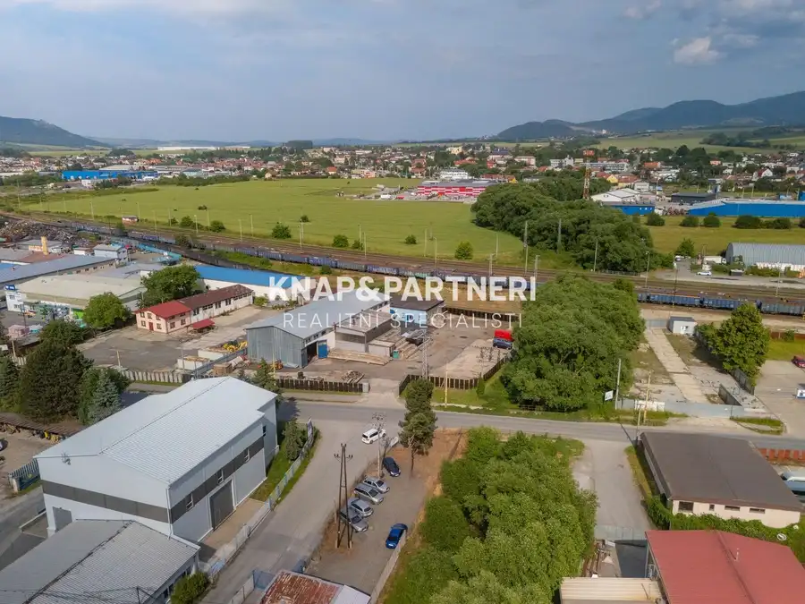
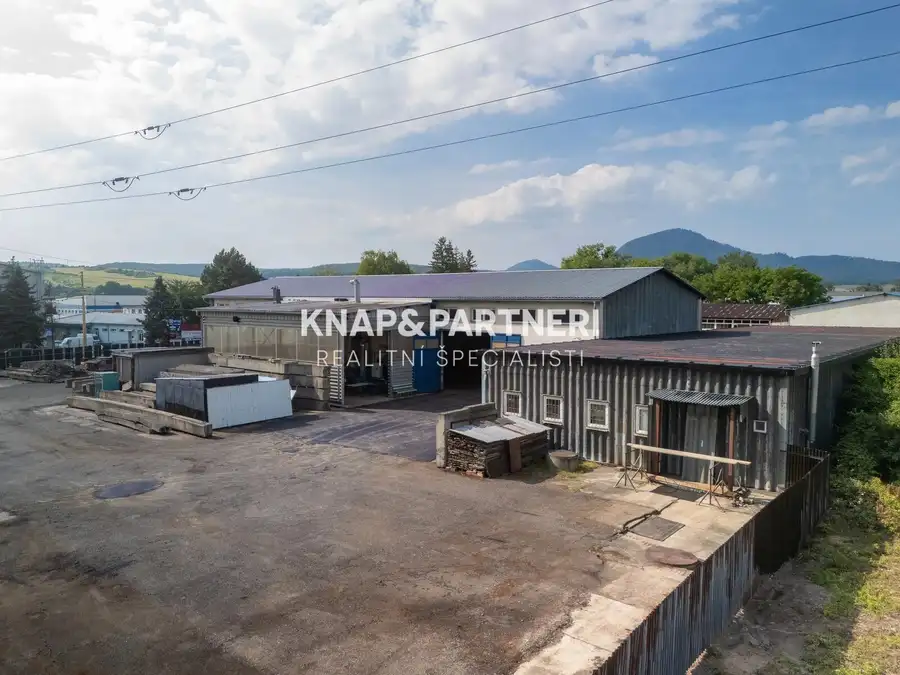
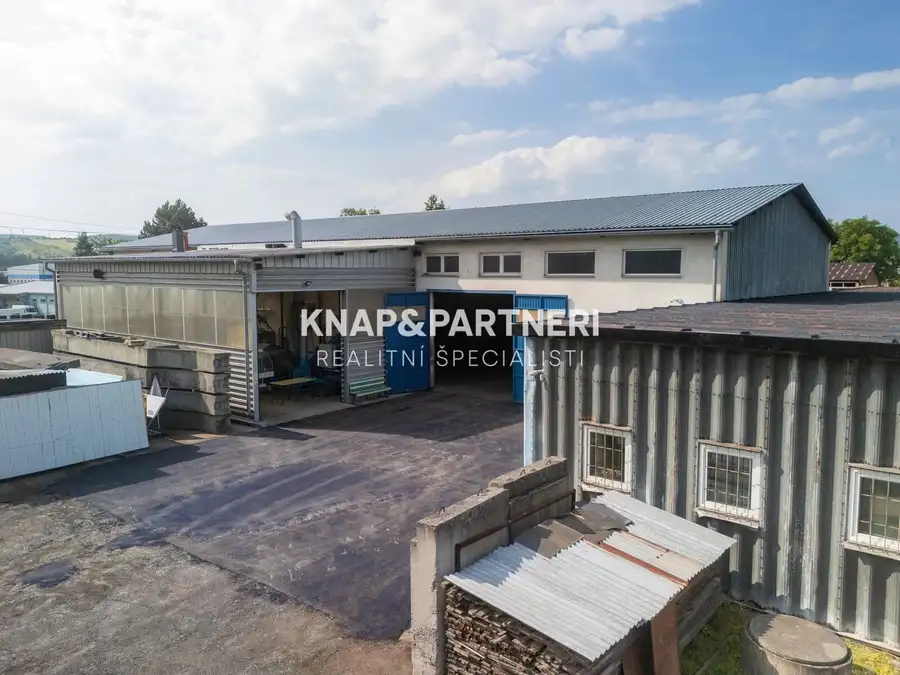
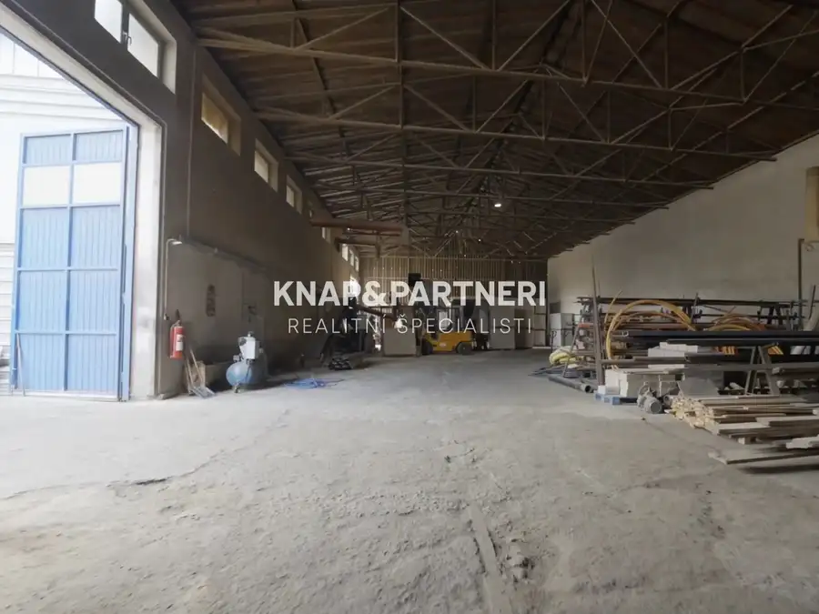
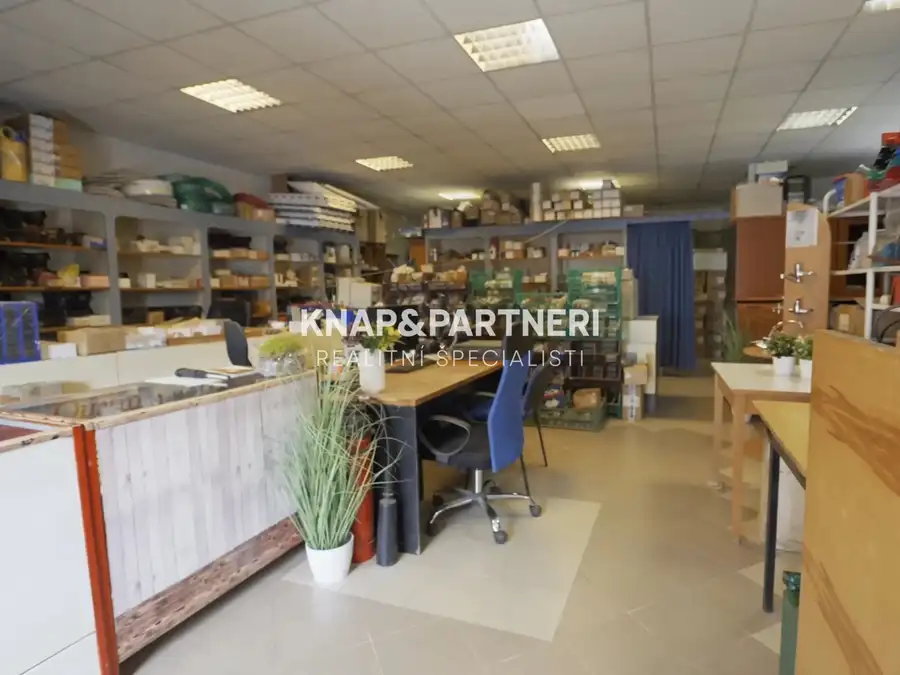
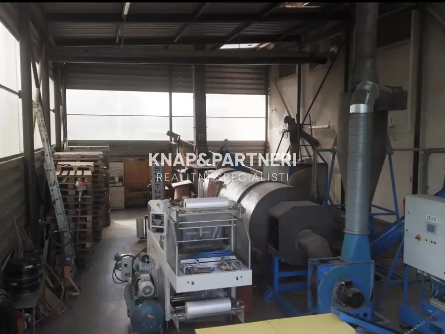
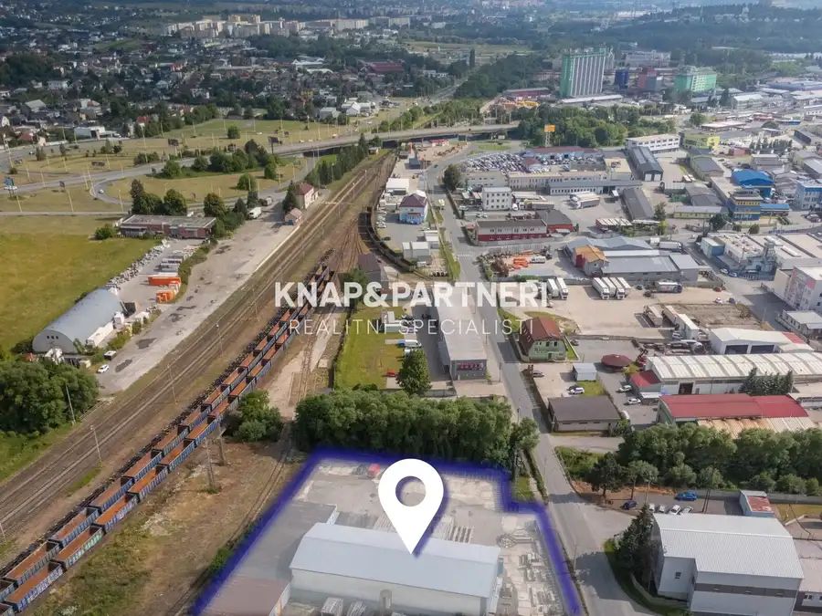
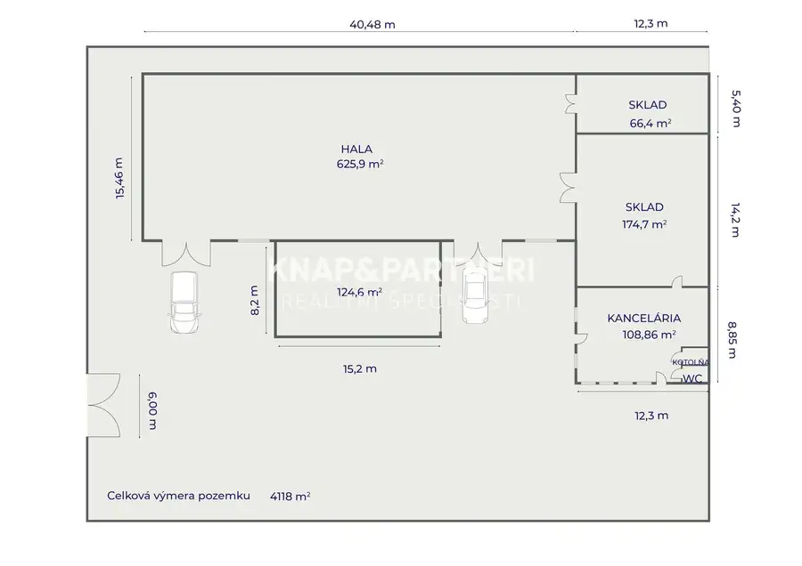
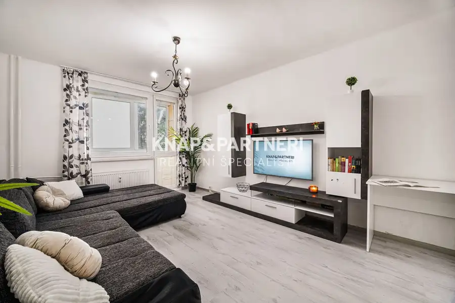

Multifunkčná hala v priemyselnej zóne, strojnícka, Prešov - nižná Šebastová
Prešov









- Plocha1099 m²
- StavPôvodný stav
- VlastníctvoOsobné
O nehnuteľnosti
Investičná príležitosť pre rôzne typy podnikania, od výroby a skladovania až po administratívne a predajné prevádzky. Nech je váš zámer akýkoľvek, táto multifunkčná hala dokáže splniť vaše požiadavky.► CELÚ PONUKU S VIDEOM SI POZRITE NA: https://bit.ly/3U0Ik8QDispozícia objektu:Hala sa nachádza na pozemku o výmere 4118 m2 a okrem zastavanej časti ponúka aj dostatok miesta na parkovanie osobných áut, či niekoľkých nákladných áut. V prípade potreby ešte väčšieho miesta na parkovanie je možné získať priestor zbúraním niektorej z hál. Celková zastavaná plocha je 1099 m² a ponúka vysokú flexibilitu a možnosti usporiadania. Strechy sú vhodné na inštaláciu fotovoltaických panelov, ktoré môžu pokryť spotrebu energie celého komplexu.► Najväčšia hala (625 m²): poskytuje dostatok miesta pre stroje, montážne linky alebo slúži ako sklad pre distribučné firmy. Jej rozloha umožňuje vysokú flexibilitu dispozičného riešenia s možnosťou rozdelenia na menšie časti.► Stredná hala (349 m²): môže slúžiť ako podpora hlavnej prevádzky. Momentálne je rozdelená na administratívnu časť s predajňou o výmere 108 m². Súčasťou je sociálne zariadenie a kotolňa s plynovým kotlom zabezpečujúcim vykurovanie celého objektu prostredníctvom radiátorov, čo chráni techniku aj v mrazivom počasí. V rámci tohto objektu sa nachádzajú aj 2 vykurované sklady.► Najmenšia hala (124 m²): aktuálne sa využíva na výrobu brikiet (predáva sa bez zariadenia). Je ideálna pre malú výrobu, výdajné miesto alebo servis osobných a nákladných vozidiel.Celý areál je oplotený a zabezpečený kamerovým systémom, čo zaručuje ochranu majetku, súkromia a zvyšuje celkovú bezpečnosť.Technické parametre:Haly sú napojené na elektrinu s istením 120A, které je možné ešte rozšířiť. Prívod vody je zabezpečený vodovodnou prípojkou pri bráne, na pozemku je takisto studňa (4m). Kanalizácia je riešená žumpou, prípojka na kanál je na druhej strane prístupovej cesty.Hala je situovaná v priemyselnej časti mesta Prešov - Nižná Šebastová, známej aj ako Širpo alebo Šarišské Lúky, ktorá má výborné napojenie na kľúčové ťahy Bardejovská - Vranovská, blízko na diaľnicu v smere do Popradu, ale aj do Košíc cez obchvat. V bezprostrednej blízkosti haly je aj železničná trať so stanicou vzdialenou iba pár metrov.Zamestnancov zase poteší blízkosť MHD zastávky či reštaurácie, kde je možné si dať aj denné menu.Táto nehnuteľnosť ponúka možnosti vytvorenia 3 nezávislých zdrojov príjmu, synergie medzi priestormi (výroba, sklad a administratíva v jednom areáli) alebo dokonca vytvorenie podnikateľského parku. To všetko na jednom pozemku, čo zjednodušuje riadenie firmy a znižuje aj prevádzkové náklady. Či už vám ako majiteľovi alebo vášmu nájomníkovi, nakoľko je táto ponuka zaujímavá aj pre investora, ktorý sa tu ešte nechce realizovať s vlastným projektom.Neváhajte nás kontaktovať a dohodnúť si obhliadku tejto unikátnej nehnuteľnosti na 0903 704 937, alebo emailom na knap@knapapartneri.sk
Parametre
- Druh
- Priestor pre výrobu
- Dátum zverejnenia
- 08. 07. 2025
- Elektrina
- Na pozemku
- Energetický certifikát budovy
- nie je
- Odpadové vody
- Pri pozemku - Kanalizácia, Na pozemku - Žumpa
- Rok výstavby
- 2011
- Stav nehnuteľnosti
- Pôvodný stav
- Typ
- Predaj
- Typ konštrukcie
- Zmiešaná
- Vlastníctvo
- Osobné
- Voda
- Pri pozemku, Na pozemku - Studňa
- Úžitková plocha
- 1099 m²
Kde to je


Mohlo by Vás zaujímať
 BytNové
355 000 €Novostavba, Amfik House, mezonetový 4 izbový byt „c“ s terasami, 217,58 m2, Prešov
Prešov
4-izbový217.58 m²2. podlažie
BytNové
355 000 €Novostavba, Amfik House, mezonetový 4 izbový byt „c“ s terasami, 217,58 m2, Prešov
Prešov
4-izbový217.58 m²2. podlažie
 DomNové
245 500 €Novostavba v radovej zástavbe v obci Záborské: dom a
Záborské
98.97 m²
DomNové
245 500 €Novostavba v radovej zástavbe v obci Záborské: dom a
Záborské
98.97 m²

BytNové 155 000 €2 izbový byt s loggiou, Sídlisko II, levočská ulica, Prešov Prešov 2-izbový52.78 m²1. podlažie